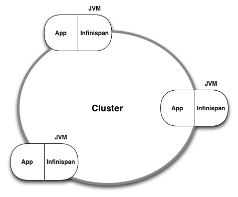
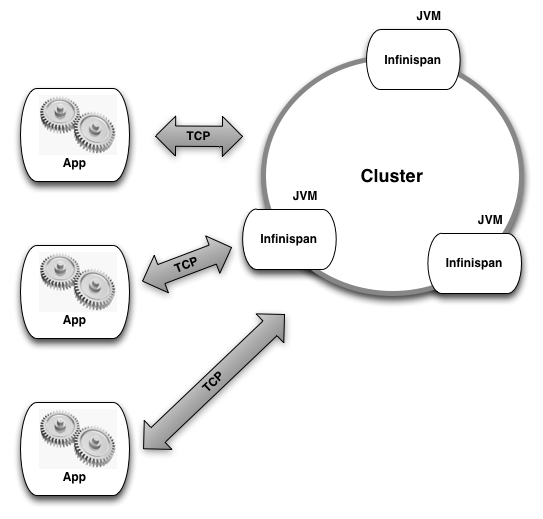
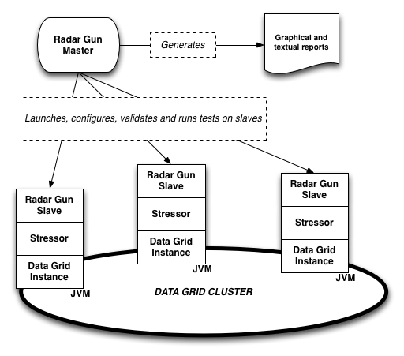
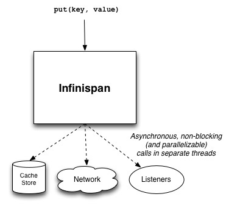

Infinispan
by Manik Surtani
Introduction
Infinispan1 is an open source data grid platform. It is a distributed, in-memory key-value NoSQL store. Software architects typically use data grids like Infinispan either as a performance-enhancing distributed in-memory cache in front of an expensive, slow data store such as a relational database, or as a distributed NoSQL data store to replace a relational database. In either case, the main reason to consider a data grid in any software architecture is performance. The need for fast and low-latency access to data is becoming increasingly common.
As such, performance is Infinispan’s sole raison d’être. Infinispan’s code base is, in turn, extremely performance sensitive.
Overview
Before digging into Infinispan’s depths, let us consider how Infinispan is typically used. Infinispan falls into a category of software called middleware. According to Wikipedia, middleware “can be described as software glue”—the components that sit on servers, in between applications, such as websites, and an operating system or database. Middleware is often used to make an application developer more productive, more effective and able to turn out—at a faster pace—applications that are also more maintainable and testable. All of this is achieved by modularisation and component reuse. Infinispan specifically is often placed in between any application processing or business logic and the data-storage tier. Data storage (and retrieval) are often the biggest bottlenecks, and placing an in-memory data grid in front of a database often makes things much faster. Further, data storage is also often a single point of contention and potential failure. Again, making use of Infinispan in front of (or even in place of) a more traditional data store, applications can achieve greater elasticity and scalability.
Who Uses Infinispan?
Infinispan has been used in several industries, ranging from telecoms to financial services, high-end e-commerce to manufacturing systems, gaming and mobile platforms. Data grids in general have always been popular in the financial services industry due to their stringent requirements around extremely fast access to large volumes of data in a way that isolates them from individual machine failure. These requirements have since spread into other industries, which contributes to Infinispan’s popularity across such a broad range of applications.
As a Library or as a Server
Infinispan is implemented in Java (and some Scala) and can be used in two different ways. First, it can be used as a library, embedded into a Java application, by including Infinispan JAR files and referencing and instantiating Infinispan components programmatically. This way, Infinispan components sit in the same JVM as the application and a part of the application’s heap memory is allocated as a data grid node.

Second, it can be used as a remote data grid by starting up Infinispan instances and allowing them to form a cluster. A client can then connect to this cluster over a socket from one of the many client libraries available. This way, each Infinispan node exists within its own isolated JVM and has the entire JVM heap memory at its disposal.

Peer-to-Peer Architecture
In both cases, Infinispan instances detect one another over a network, form a cluster, and start sharing data to provide applications with an in-memory data structure that transparently spans all the servers in a cluster. This allows applications to theoretically address an unlimited amount of in-memory storage as nodes are added to the cluster, increasing overall capacity.
Infinispan is a peer-to-peer technology where each instance in the cluster is equal to every other instance in the cluster. This means there is no single point of failure and no single bottleneck. Most importantly, it provides applications with an elastic data structure that can scale horizontally by adding more instances. And that can also scale back in, by shutting down some instances, all the while allowing the application to continue operating with no loss of overall functionality.
Benchmarking Infinispan
The biggest problem when benchmarking a distributed data structure like Infinispan is the tooling. There is precious little that will allow you to measure the performance of storing and retrieving data while scaling out and back in. There is also nothing that offers comparative analysis, to be able to measure and compare performance of different configurations, cluster sizes, etc. To help with this, Radar Gun was created.
Radar Gun is covered in more depth in Section posa.infinispan.radargun. The other tools mentioned here—the Yahoo Cloud Serving Benchmark, The Grinder and Apache JMeter—are not covered in as much depth, despite still being very important in benchmarking Infinispan. A lot of literature about these tools already exists online.
Radar Gun
Radar Gun2 is an open source benchmarking framework that was designed to perform comparative (as well as competitive) benchmarks, to measure scalability and to generate reports from data points collected. Radar Gun is specifically targeted at distributed data structures such as Infinispan, and has been used extensively during the development of Infinispan to identify and fix bottlenecks. See Section posa.infinispan.radargun for more information on Radar Gun.
Yahoo Cloud Serving Benchmark
The Yahoo Cloud Serving Benchmark3 (YCSB) is an open source tool created to test latency when communicating with a remote data store to read or write data of varying sizes. YCSB treats all data stores as a single remote endpoint, so it doesn’t attempt to measure scalability as nodes are added to or removed from a cluster. Since YCSB has no concept of a distributed data structure, it is only useful to benchmark Infinispan in client/server mode.
The Grinder and Apache JMeter
The Grinder4 and Apache JMeter5 are two simple open source load generators that can be used to test arbitrary servers listening on a socket. These are highly scriptable and, just like YCSB, useful for benchmarking Infinispan when used in client/server mode.
Radar Gun
Early Days
Created by the Infinispan core development team, Radar Gun started as a project on Sourceforge called the Cache Benchmarking Framework6 and was originally designed to benchmark embedded Java caches running in different modes, in various configurations. It is designed to be comparative, so it would automatically run the same benchmark against various caching libraries—or various versions of the same library, to test for performance regressions.
Since its creation, it has gained a new name (Radar Gun), a new home on GitHub7 and a host of new features.
Distributed Features
Radar Gun soon expanded to cover distributed data structures. Still focused on embedded libraries, Radar Gun is able to launch multiple instances of the framework on different servers, which in turn would launch instances of the distributed caching library. The benchmark is then run in parallel on each node in the cluster. Results are collated and reports are generated by the Radar Gun controller. The ability to automatically bring up and shut down nodes is crucial to scalability testing, as it becomes infeasible and impractical to manually run and re-run benchmarks on clusters of varying sizes, from two nodes all the way to hundreds or even thousands of nodes.

Fast and Wrong is No Good!
Radar Gun then gained the ability to perform status checks before and after running each stage of the benchmark, to ensure the cluster is still in a valid state. This allowed for early detection of incorrect results, and allowed for re-running of a benchmark without waiting for manual intervention at the end of a run—which could take many hours.
Profiling
Radar Gun is also able to start and attach profiler instances to each data grid node and take profiler snapshots, for more insight into the goings on in each node when under load.
Memory Performance
Radar Gun also has the ability to measure the state of memory consumption of each node, to measure memory performance. In an in-memory data store, performance isn’t all about how fast you read or write data, but also how well the structure performs with regards to memory consumption. This is particularly important in Java-based systems, as garbage collection can adversely affect the responsiveness of a system. Garbage collection is discussed in more detail later.
Metrics
Radar Gun measures performance in terms of transactions per second. This is captured for each node and then aggregated on the controller. Both reads and writes are measured and charted separately, even though they are performed simultaneously (to ensure a realistic test where such operations are interleaved). Radar Gun also captures means, medians, standard deviation, maximum and minimum values for read and write transactions, and these too are logged although they may not be charted. Memory performance is also captured, by way of a footprint for any given iteration.
Extensibility
Radar Gun is an extensible framework. It allows you to plug in your own data access patterns, data types and sizes. Further, it also allows you to add adapters to any data structure, caching library or NoSQL database that you would like to test.
End-users are often encouraged to use Radar Gun too when attempting to compare the performance of different configurations of a data grid.
Prime Suspects
There are several subsystems of Infinispan that are prime suspects for performance bottlenecks, and as such, candidates for close scrutiny and potential optimization. Let’s look at each of these in turn.
The Network
Network communication is the single most expensive part of Infinispan, whether used for communication between peers or between clients and the grid itself.
Peer Network
Infinispan makes use of JGroups8, an open source peer-to-peer group communication library for inter-node communication. JGroups can make use of either TCP or UDP network protocols, including UDP multicast, and provides high level features such as message delivery guarantees, retransmission and message ordering even over unreliable protocols such as UDP.
It becomes crucially important to tune the JGroups layer correctly, to match the characteristics of your network and application, such as time-to-live, buffer sizes, and thread pool sizes. It is also important to account for the way JGroups performs bundling—the combining of multiple small messages into single network packets—or fragmentation—the reverse of bundling, where large messages are broken down into multiple smaller network packets.
The network stack on your operating system and your network equipment (switches and routers) should also be tuned to match this configuration. Operating system TCP send and receive buffer sizes, frame sizes, jumbo frames, etc. all play a part in ensuring the most expensive component in your data grid is performing optimally.
Tools such as netstat and wireshark can help analyse packets, and Radar Gun can help drive load through a grid. Radar Gun can also be used to profile the JGroups layer of Infinispan to help locate bottlenecks.
Server Sockets
Infinispan makes use of the popular Netty9 framework to create and manage server sockets. Netty is a wrapper around the asynchronous Java NIO framework, which in turn makes use of the operating system’s asynchronous network I/O capabilities. This allows for efficient resource utilization at the expense of some context switching. In general, this performs very well under load.
Netty offers several levels of tuning to ensure optimal performance. These include buffer sizes, thread pools and the like, and should also be matched up with operating system TCP send and receive buffers.
Data Serialization
Before putting data on the network, application objects need to be serialized into bytes so that they can be pushed across a network, into the grid, and then again between peers. The bytes then need to be de-serialized back into application objects, when read by the application. In most common configurations, about 20% of the time spent in processing a request is spent in serialization and de-serialization.
Default Java serialization (and de-serialization) is notoriously slow, both in terms of CPU cycles and the bytes that are produced—they are often unnecessarily large, which means more data to push around a network.
Infinispan uses its own serialization scheme, where full class definitions are not written to the stream. Instead, magic numbers are used for known types where each known type is represented by a single byte. This greatly improves not just serialization and de-serialization speed, but also produces a much more compact byte stream for transmission across a network. An externalizer is registered for each known data type, registered against a magic number. This externalizer contains the logic to convert object to bytes and vice versa.
This technique works well for known types, such as internal Infinispan objects that are exchanged between peer nodes. Internal objects—such as commands, envelopes, etc.—have externalizers and corresponding unique magic numbers. But what about application objects? By default, if Infinispan encounters an object type it is unaware of, it falls back to default Java serialization for that object. This allows Infinispan to work out of the box—albeit in a less efficient manner when dealing with unknown application object types.
To get around this, Infinispan allows application developers to register externalizers for application data types as well. This allows powerful, fast, efficient serialization of application objects too, as long as the application developer can write and register externalizer implementations for each application object type.
This externalizer code has been released as a separate, reusable library, called JBoss Marshalling.10 It is packaged with Infinispan and included in Infinispan distributions, but it is also used in various other open source projects to improve serialization performance.
Writing to Disk
In addition to being an in-memory data structure, Infinispan can also optionally persist to disk.
Persistence can either be for durability—to survive restarts or node failures, in which case everything in memory also exists on disk—or it can be configured as an overflow when Infinispan runs out of memory, in which case it acts in a manner similar to an operating system paging to disk. In the latter case, data is only written to disk when data needs to be evicted from memory to free up space.
When persisting for durability, persistence can either be online, where the application thread is blocked until data is safely written to disk, or offline, where data is flushed to disk periodically and asynchronously. In the latter case, the application thread is not blocked on the process of persistence, in exchange for uncertainty as to whether the data was successfully persisted to disk at all.
Infinispan supports several pluggable cache stores—adapters that can be used to persist data to disk or any form of secondary storage. The current default implementation is a simplistic hash bucket and linked list implementation, where each hash bucket is represented by a file on the filesystem. While easy to use and configure, this isn’t the best-performing implementation.
Two high-performance, filesystem-based native cache store implementations are currently on the roadmap. Both will be written in C, with the ability to make system calls and use direct I/O where available (such as on Unix systems), to bypass kernel buffers and caches.
One of the implementations will be optimized for use as a paging system, and will therefore need to have random access, possibly a b-tree structure.
The other will be optimized as a durable store, and will mirror what is stored in memory. As such, it will be an append-only structure, designed for fast writing but not necessarily for fast reading/seeking.
Synchronization, Locking and Concurrency
As with most enterprise-class middleware, Infinispan is heavily biased towards modern, multi-core systems. To make use of the parallelism we have available with the large number of hardware threads in multi-core and SMP systems, as well as non-blocking, asynchronous I/O when dealing with network and disk communication, Infinispan’s core data structures make use of software transactional memory techniques for concurrent access to shared data. This minimizes the need for explicit locks, mutexes and other forms of synchronization, preferring techniques like compare-and-set operations within a loop to achieve correctness when updating shared data structures. Such techniques have been proven to improve CPU utilization in multi-core and SMP systems, and despite the increased code complexity, has paid off in overall performance when under load.
In addition to the benefits of using software transactional memory approaches, this also future-proofs Infinispan to harness the power of synchronization support instructions in CPUs—hardware transactional memory—when such CPUs become commonplace, with minimal change to Infinispan’s design.
Several data structures used in Infinispan are straight out of academic research papers. In fact, the non-blocking, lock-free dequeue11 used in Infinispan was the structure’s first Java implementation. Other examples include novel designs for lock amortization12 and adaptive eviction policies.13
Threads and Context Switching
Various Infinispan subsystems make use of asynchronous operations that happen on separate threads. For example, JGroups allocates threads to monitor a network socket, which then decode messages and pass them to a message delivery thread. This may in turn attempt to store data in a cache store on disk—which may also be asynchronous and use a separate thread. Listeners may be notified of changes as well, and this can be configured to be asynchronous.
When dealing with thread pools to process such asynchronous tasks, there is always a context switching overhead. That threads are not cheap resources is also noteworthy. Allocating appropriately sized and configured thread pools is important to any installation making use of any of the asynchronous features of Infinispan.
Specific areas to look at are the asynchronous transport thread pool (if using asynchronous communications) and ensuring this thread pool is at least as large as the expected number of concurrent updates each node is expected to handle. Similarly, when tuning JGroups, the OOB14 and incoming thread pools should be at least as big as the expected number of concurrent updates.

Garbage Collection
General good practices with regards to working with JVM garbage collectors is an important consideration for any Java-based software, and Infinispan is no exception. If anything, it is all the more important for a data grid, since container objects may survive for long periods of time while lots of transient objects—related to a specific operation or transaction—are also created. Further, garbage collection pauses can have adverse effects on a distributed data structure, as they can render a node unresponsive and cause the node to be marked as failed.
These have been taken into consideration when designing and building Infinispan, but at the same time there is a lot to consider when configuring a JVM to run Infinispan. Each JVM is different. However, some analysis15 has been done on the optimal settings for certain JVMs when running Infinispan. For example, if using OpenJDK16 or Oracle’s HotSpot JVM17, using the Concurrent Mark and Sweep collector18 alongside large pages19 for JVMs given about 12 GB of heap each appears to be an optimal configuration.
Further, pauseless garbage collectors—such as C420, used in Azul’s Zing JVM21—are worthwhile considering cases where garbage collection pauses become a noticeable issue.
Conclusions
Performance-centric middleware like Infinispan has to be architected, designed and developed with performance in mind every step of the way. From using the best non-blocking and lock-free algorithms to understanding the characteristics of garbage being generated, to developing with an appreciation for JVM context switching overhead, to being able to step outside the JVM where needed (writing native persistence components, for example) are all important parts of the mindset needed when developing Infinispan. Further, the right tools for benchmarking and profiling, as well as running benchmarks in a continuous integration style, helps ensure performance is never sacrificed as features are added.
-
http://github.com/radargun↩ -
http://www.md.chalmers.se/~tsigas/papers/Lock-Free-Deques-Doubly-Lists-JPDC.pdf ↩
-
http://www.jgroups.org/manual/html/user-advanced.html#d0e3284↩ -
http://howtojboss.com/2013/01/08/data-grid-performance-tuning/ ↩
-
http://www.oracle.com/technetwork/java/javase/downloads/index.html ↩
-
http://www.oracle.com/technetwork/java/javase/gc-tuning-6-140523.html#cms↩ -
http://www.oracle.com/technetwork/java/javase/tech/largememory-jsp-137182.html ↩
-
http://www.azulsystems.com/technology/c4-garbage-collector ↩